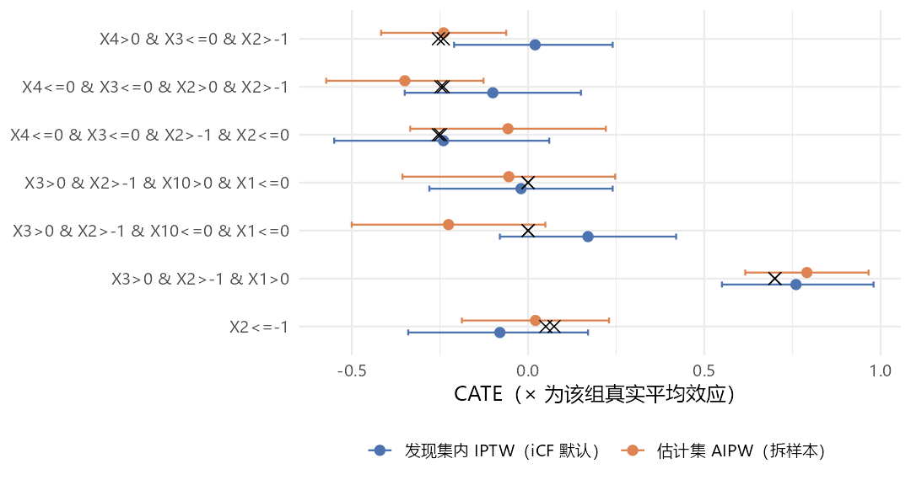

9. 实测清单与推荐工作流
26 处陷阱汇总、五个关键实验，以及一套拆样本的诚实流程
本页先把前八页的问题收成一张表，再展开五个决定”结果能不能信”的实验， 最后给一套在当前代码下可以照抄的工作流。
陷阱总表
证据列：源码＝本机安装的 iCF（commit 8932f6a）函数体； 实测＝Windows R 4.4.3、grf 2.6.1 下实际运行；README＝作者仓库说明原文。
| # | 现象 | 后果 | 怎么办 | 证据 |
|---|---|---|---|---|
| 1 | install_github() 装不上 |
R/iCF_README.R 被执行、旧 NAMESPACE 报错 |
最小修补安装 | 实测 |
| 2 | README 漏写 glmnet、cowplot |
算亚组效应时报 could not find function "cv.glmnet" |
加载时补上 | 源码 + 实测 |
| 3 | 核心函数从全局环境读数据 | 包进函数或换数据后静默用旧数据 | 顶层运行；换数据重设全部全局对象 | 源码 |
| 4 | plyr 屏蔽 summarise() |
PS_trim() 报 ..1 must be of size 1 |
先 detach("package:plyr") |
实测 |
| 5 | CF_RAW_key() 内 set.seed(1234)、基础绘图 |
重置随机数流；非交互会话写 Rplots.pdf |
工作目录设到临时目录 | 源码 + 实测 |
| 6 | variable_type = "hd" 且 hdPctTop = 1 |
报 object 'selected_cf.idx_hd' not found |
用 < 1 的分位数或 > 1 的个数 | 实测 |
| 7 | 只选中 1 个变量时 CF() 取列退化成向量 |
grf 报 only supported data input types are matrix, data.frame |
min.split.var ≥ 2 |
源码 + 实测 |
| 8 | treeNo < 20 |
find_best_tree() 报 missing value where TRUE/FALSE needed |
treeNo ≥ 20 |
实测 |
| 9 | iCFCV() 的 min.split.var、variable_type、hdPctTop |
对种树不起作用 | 在第 1 步设好全局 selected_cf.idx |
实测 |
| 10 | P 值不过 P_threshold |
iCFCV() 报 object 'vote_D2_subgroup.L.majority' not found |
自己先看 P 值再决定是否调用 | 实测 |
| 11 | P_threshold = 1 且无真实异质性 |
仍输出亚组（纯噪声切分） | 看 P 值、看稳定性、拆样本验证 | 实测 |
| 12 | P 值先四舍五入到一位小数 | 0.14 当作 0.1 | 知道即可 | 源码 |
| 13 | 每折种树都读全局全样本 | 验证折参与亚组发现 | 拆样本 | 实测 |
| 14 | 各折发现过程逐位相同 | 跨折稳定性恒为 1、_icvsw 与 _ori 恒相同 |
不把跨折稳定性当证据 | 实测 |
| 15 | 每折 D2 森林种两遍 | 多耗约 1/5 时间 | 无 | 实测 |
| 16 | R-loss 剪枝结果被丢弃 | 亚组数由叶大小决定 | 认真调叶大小 | 实测 |
| 17 | 连续变量 + split_val_round_posi = 0 |
切点 0.5 变成 0 | 事先分类，或取 1–2 位小数 | 实测 |
| 18 | 亚组效应在同一份数据上估计、用模型标准误 | 区间偏窄（稳健区间宽 34%） | 另一半数据上用 AIPW 估计 | 实测 |
| 19 | CATE_t2_ori 每人一行、n 列全是 1 |
误把 n 当亚组样本量 |
distinct() 后自己数 |
实测 |
| 20 | PlotVI() 忽略第一个参数 |
画的是全局 varimp_cf |
用 GG_VI() |
实测 |
| 21 | GG_DepthDistribution() 的 tiff 是空白的 |
25 MB 白图 | 直接 cowplot::plot_grid() |
实测 |
| 22 | GG_CV_Dx_*() 只支持 K = 5 或 10 |
其它 K 报 object 'Dx_fig' not found |
取返回值里的单折图 | 实测 |
| 23 | LEAFSIZE_tune()、GRID_LEAFSIZE() |
调用不存在的 iCF_basic() |
用 MinLeafSizeTune() |
源码 |
| 24 | hdiCF README 合并稀疏级别后没重建 Train |
可能报 factor ... has new levels |
data.frame(Y, W, X) 重建 |
源码 + 实测 |
| 25 | 结局只有 3–7 个不同取值 | CF_GROUP_DECISION() 模型对象未定义 |
结局用 0/1 或连续 | 源码 |
| 26 | man/ 下的帮助页过时 |
17 个 Rd 描述已不存在的函数 | 以源码为准 | 源码 |
实验 1：无异质性数据
用 README 的设定，但去掉全部交互项（真实效应恒为 −0.4），n = 3 000，种子 99。 下面的 sim_readme() 只是把第 3 页的生成代码包成函数， hte = FALSE 时去掉含 W 的交互项与 0.2*X1*X3：
Null <- sim_readme(3000, seed = 99, hte = FALSE) # 与第 3 页相同的生成代码，去掉 W 的交互项
# ……设全局对象，CF_RAW_key(Null, 1, "non-hd", 0.9)……
HTE_P_cf.raw
#> [1] 0.554
colnames(X)[selected_cf.idx]
#> [1] "X2" "X4" "X7" "X10"同质性检验 P = 0.554，正确地没有发现异质性。按论文的 \(\alpha = 0.1\) 调用：
iCFCV(Null, K = 5, treeNo = 100, iterationNo = 5, min.split.var = 4, split_val_round_posi = 0,
P_threshold = 0.1, variable_type = "non-HD", hdPctTop = 0.95, HTE_P_cf.raw = HTE_P_cf.raw)
#> Error: object 'vote_D2_subgroup.L.majority' not foundelse 分支只定义了 vote_D2_subgroup.CVmajority，return() 却引用 vote_D2_subgroup.L.majority。任何 round(P, 1) > P_threshold 的调用都会这样结束， 论文 Figure 1A 里”No strong subgroups”那条路在代码里走不通。
改用 README 的 P_threshold = 1：
res0 <- quiet(iCFCV(Null, 5, 100, 5, 4, 0, P_threshold = 1, "non-HD", 0.95, HTE_P_cf.raw))
res0$selectedSG_ori$majority
#> subgroupID subgroup
#> 1 1 X2<=0
#> 2 2 X2>0
res0$selectedSG_stability_ori
#> |grp_pick |stability_vote_mean4CV |stability_CV |mse_g2_Model |mse_g3_Model |mse_g4_Model |mse_g5_Model |
#> |W:G2x |0.4 |1 |7.97885 |8.37875 |8.11091 |8.00072 || 亚组 | n | CATE_iptw |
真实值 |
|---|---|---|---|
X2<=0 |
1 538 | −0.38 (−0.49, −0.26) | −0.4 |
X2>0 |
1 462 | −0.44 (−0.57, −0.31) | −0.4 |
它仍然给出一个亚组划分——按一个纯预后变量（X2 是混杂）切成两半， 耗时 51 秒。两组效应都接近 −0.4、区间高度重叠，读者能看出”其实没差别”； 但输出本身不会告诉你”不必分亚组”：PICK_CV() 只在 G2–G5 之间选， 主效应模型从不进入候选。P 值与折内稳定性（此处 0.4）是仅有的两个警示信号。
实验 2：每折都在全样本上种树
iCFCV() 每折对训练集调用 CF_RAW_key(Train_cf, ...)，看起来是在训练集上重来一遍。 但真正种树的 CF() 不接收数据参数，按词法作用域读全局的 X、Y、W、 Y.hat、W.hat、selected_cf.idx。用 trace() 记录第 5 页那次主运行：
cf_rows <- integer(0); rawkey_rows <- integer(0)
trace("CF", quote(cf_rows <<- c(cf_rows, nrow(X))), print = FALSE, where = asNamespace("iCF"))
trace("CF_RAW_key", quote(rawkey_rows <<- c(rawkey_rows, nrow(Train_cf))), print = FALSE,
where = asNamespace("iCF"))
res <- quiet(iCFCV(dat = Train, K = 5, treeNo = 200, iterationNo = 10, ...))
table(rawkey_rows)
#> 4000
#> 5
table(cf_rows)
#> 5000
#> 250CF_RAW_key() 确实拿到了 4 000 行的训练折，但 250 次种树看到的全是 5 000 行的全样本。 验证折既参与了发现亚组，又被用来评估这些亚组，交叉验证误差与深度选择都偏乐观。
实验 3：各折的发现过程逐位相同
实验 2 还有一个更直接的后果。每折开头 CF_RAW_key() 执行 set.seed(1234)， 之后消耗随机数的步骤在各折完全一样，于是进入 SUBGROUP_PIPELINE() 时 随机数状态相同；而种树的数据又都是全局全样本——每折种出的森林完全相同。 用 trace(exit = ) 截获每次 iCF() 的返回值，在 3 折的小设置下逐一比对：
icf_out <- list()
trace("iCF", exit = quote(icf_out[[length(icf_out) + 1]] <<- returnValue()), print = FALSE,
where = asNamespace("iCF"))
r3 <- quiet(iCFCV(Train, K = 3, treeNo = 50, iterationNo = 3, min.split.var = 4, ...))
bt <- function(o) lapply(o, function(it) it[[1]]) # 每次迭代的最佳树数据框
identical(bt(icf_out[[1]]), bt(icf_out[[6]])) # D5：第 1 折 vs 第 2 折| 深度 | 第 1 折 = 第 2 折 | 第 1 折 = 第 3 折 |
|---|---|---|
| D5 | TRUE | TRUE |
| D4 | TRUE | TRUE |
| D3 | TRUE | TRUE |
| D2 | TRUE | TRUE |
所有深度、所有迭代的最佳树逐位相同。于是：
- 各折给出的 \(G_2, \dots, G_5\) 必然一致，跨折稳定性恒为 1（第 5 页主运行、 实验 1、第 8 页 hdiCF 的
stability_CV全是 1）； - “误差除以跨折稳定性”的
_icvsw选择与原始选择恒相同； - K 折交叉验证退化成”一次在全样本上发现亚组，再在 K 个验证折上分别打分”。 打分的验证折本身参与了发现，所以更深、更碎的划分容易得到更低的误差。
实验 4：连续修饰变量与切点取整
生成只含一个连续修饰变量的数据：X2 > 0.5 的人治疗效应多 0.8（论文场景 3 的简化版）， n = 5 000，种子 42。先是陷阱 7：min.split.var = 1 时 只有 X2 入选，iCF() 直接报错。改用 min.split.var = 3（入选 X2、X4、X7）， 对 D2 种 10 个森林，只改变 split_val_round_posi：
split_val_round_posi |
10 棵最佳树的根节点切点 | 合成切点 | 输出亚组 |
|---|---|---|---|
| 0 | 全部为 0 | 0 | X2<=0、X2>0 |
| 1 | 0.2–0.4 | 0.3 | X2<=0.3、X2>0.3 |
| 2 | 0.21–0.43 | 0.28 | X2<=0.28、X2>0.28 |
变量找对了，但切点有两层误差：因果森林本身把切点放在 0.2–0.4（真值 0.5）， 这与取整无关；取整到整数后又被推到 0，于是约 19% 的人（\(0 < X_2 \le 0.5\)）被分错组。 论文的建议是事先把连续变量分类（p. 773）；如果保留连续变量，至少取 1 位小数。
实验 5：拆样本，诚实地估计亚组效应
把第 3–5 页那份数据（下面记作 Full，n = 5 000）随机分成两半：发现集 A 跑完整个 iCF 得到规则， 估计集 B 只用来估计每条规则的效应。
set.seed(2025)
idx <- sample(nrow(Full), nrow(Full) / 2)
A <- Full[idx, ]; B <- Full[-idx, ]
# 发现：A 上走完第 3–5 页的全部步骤（全局对象都按 A 重设）
# ……CF_RAW_key(A, 1, "non-hd", 0.9)……
colnames(X)[selected_cf.idx]
#> [1] "X1" "X2" "X3" "X4" "X10"
resA <- quiet(iCFCV(A, K = 5, treeNo = 200, iterationNo = 10, min.split.var = 4,
split_val_round_posi = 0, P_threshold = 1, variable_type = "non-HD",
hdPctTop = 0.95, HTE_P_cf.raw = HTE_P_cf.raw))
rules <- resA$selectedSG_ori$majority$subgroup
# 估计：B 上用 grf 的 AIPW，每条规则一个子集
cfB <- grf::causal_forest(as.matrix(B[, -(1:2)]), B$Y, B$W, seed = 1)
est_B <- t(sapply(rules, function(r) grf::average_treatment_effect(cfB, subset = eval(parse(text = r), B))))发现集 A 只有 2 500 人，“大于均值”规则选进了 5 个变量（全样本时只选 X1、X3）， 其中 X2、X4、X10 是连续的混杂或预后变量。iCF 于是选了 D5，切出 7 个亚组， 折内稳定性只有 0.1（耗时 66 秒）：
| 规则（A 上发现） | A 内 IPTW（iCF 默认） | B 上 AIPW | 真实值 |
|---|---|---|---|
X3>0 & X2>-1 & X1>0 |
0.76 (0.55, 0.98) | 0.79 (0.62, 0.97) | 0.70 |
X2<=-1 |
−0.08 (−0.34, 0.17) | 0.02 (−0.19, 0.23) | 0.05–0.07 |
X3>0 & X2>-1 & X10<=0 & X1<=0 |
0.17 (−0.08, 0.42) | −0.23 (−0.50, 0.05) | 0 |
X3>0 & X2>-1 & X10>0 & X1<=0 |
−0.02 (−0.28, 0.24) | −0.05 (−0.36, 0.25) | 0 |
X4<=0 & X3<=0 & X2>-1 & X2<=0 |
−0.24 (−0.55, 0.06) | −0.06 (−0.33, 0.22) | −0.25 |
X4<=0 & X3<=0 & X2>0 & X2>-1 |
−0.10 (−0.35, 0.15) | −0.35 (−0.57, −0.13) | −0.24 |
X4>0 & X3<=0 & X2>-1 |
0.02 (−0.21, 0.24) | −0.24 (−0.42, −0.06) | −0.24 |

三点观察：
- 只有一条规则是真的。
X3>0 & X2>-1 & X1>0对应真实的高效应组（0.7）， 两种估计都抓住了它。其余 6 条是 X2、X4、X10 上的噪声切分： 这 6 组的真实效应只集中在 0 与 −0.25 附近两档。 全样本 5 000 人时 iCF 完美恢复四格（第 5 页），样本减半、筛进连续噪声变量后就不行了。 变量筛选这一步决定成败。 - B 上的区间 7 个全部覆盖真值；A 内的 iCF 默认区间覆盖了 6 个。 这一次两者差别不大，但 A 内的估计与发现用的是同一批人，没有理论保证。
- 规则
X4<=0 & X3<=0 & X2>0 & X2>-1里同一变量出现两次， 这是TREE2SUBGROUP()不合并同变量条件的结果，读的时候要自己化简（即X2>0）。
生存结局
iCF 源码里没有任何删失处理：森林是 causal_forest()， 效应模型是高斯 glm，论文把生存数据列为局限（p. 774）。 README 的实证例子把”两年内是否住院”当二分类 \(Y\)，删失者当作未发生。
一个可行的接法是伪观测：把”截至 \(t^*\) 仍存活”的 Kaplan–Meier 伪值当作连续结局喂给 iCF， 只用它来发现规则；效应在留出集上用 grf::causal_survival_forest() 估计。
ps <- pseudo::pseudosurv(time = dat$time, event = dat$status, tmax = 2)
dat$Y <- ps$pseudo[, 1] # 伪值的均值恰等于 KM 估计的 S(2)本机 2026-09-27 做过一轮模拟（README 协变量，n = 4 000，Weibull 比例风险， log HR 由 X1、X3 修饰，目标 \(S_1(2) - S_0(2)\)，\(t^*\) 前删失约 30%，5 个种子； 脚本未随本站发布）。指标是”发现的划分能解释真实效应方差的比例” \(R^2\)：
| 情形 | 做法 | \(R^2\) | ATE 偏差 |
|---|---|---|---|
| 无删失（对照） | 真实二分类结局 | 0.87 | 0.008 |
| 独立删失 | 伪观测 | 0.68 | 0.003 |
| 独立删失 | 删失当作未发生 | 0.62 | −0.004 |
| 删失依赖治疗与 X2 | 伪观测 | 0.45 | 0.017 |
| 删失依赖治疗与 X2 | 删失当作未发生 | 0.43 | 0.056 |
独立删失下伪观测可用；删失依赖协变量时，所有做法的发现能力都明显下降， 边际 KM 伪值也会有偏，需要 IPCW 伪观测。40 次运行里另有 5 次在 CATE_SG() → prop.func() 处报 subscript out of bounds，与结局构造无关。
推荐工作流
在不改 iCF 源码的前提下，下面这套流程绕开了上表中影响结论的几处问题：
## 0. 准备 ---------------------------------------------------------------
old <- setwd(tempdir()) # 吸收 png / tiff / Rplots.pdf
pkgs <- c("MASS", "grf", "tidyverse", "rlang", "rlist", "plyr", "caret", "caTools",
"randomForest", "ggridges", "data.table", "broom", "rstatix", "knitr",
"DiagrammeR", "glmnet", "cowplot")
invisible(lapply(pkgs, library, character.only = TRUE))
library(iCF)
quiet <- function(x) { invisible(utils::capture.output(x)); x }
## 1. 拆样本：A 发现，B 估计 ------------------------------------------------
set.seed(2025)
idx <- sample(nrow(dat), nrow(dat) / 2)
A <- dat[idx, ]; B <- dat[-idx, ]; rownames(A) <- NULL
## 2. 在 A 上设全部全局对象（顶层运行，不要包进函数） ----------------------
Train <- A
vars_forest <- colnames(A)[-(1:2)]
X <- A[, vars_forest]; Y <- A$Y; W <- A$W
k <- quiet(CF_RAW_key(A, min.split.var = 2, variable_type = "non-hd", hdPctTop = 0.9))
Y.hat <- k$Y.hat; W.hat <- k$W.hat; HTE_P_cf.raw <- k$HTE_P_cf.raw
varimp_cf <- k$varimp_cf; selected_cf.idx <- k$selected_cf.idx
colnames(X)[selected_cf.idx] # 检查入选变量：它决定成败
HTE_P_cf.raw # 自己判断，不靠 P_threshold
vars_catover2 <- find_level_over2(X)
## 3. 调叶大小（第 4 页），然后运行 --------------------------------------------
leafsize <- list(D5 = 85, D4 = 65, D3 = 45, D2 = 25) # 用 MinLeafSizeTune() 核对后再定
resA <- quiet(iCFCV(dat = A, K = 5, treeNo = 1000, iterationNo = 100, min.split.var = 2,
split_val_round_posi = 1, P_threshold = 1, variable_type = "non-hd",
hdPctTop = 0.9, HTE_P_cf.raw = HTE_P_cf.raw))
rules <- resA$selectedSG_ori$majority$subgroup
resA$selectedSG_stability_ori # 只看 stability_vote_mean4CV，不看 stability_CV
## 4. 在 B 上估计每条规则的效应 ----------------------------------------------
cfB <- grf::causal_forest(as.matrix(B[, -(1:2)]), B$Y, B$W)
est <- t(sapply(rules, function(r)
grf::average_treatment_effect(cfB, subset = eval(parse(text = r), B))))
cbind(n = sapply(rules, function(r) sum(eval(parse(text = r), B))), est)
setwd(old)报告时写出：入选变量、各深度候选亚组与折内稳定性、最终规则、 B 上的效应与区间、以及 A 上的同质性检验 P 值。
与其它方法的关系
- grf 手册：iCF 的每一个森林都是
grf::causal_forest()， 最佳树、变量重要性、test_calibration()的含义都在那里； - model4you、StratifiedMedicine： 另外两种”输出一棵树”的亚组方法，前者在参数模型上做 MOB，后者是 PRISM 流水线；
- unihtee：不切亚组、只给逐变量检验，适合作为 iCF 之前的变量筛选；
- 本机另做过 iCF 与 causalDT（蒸馏树）的对照（2026-09-26，各 5 个种子）： 在 iCF 自家 README 的全二分类设定上 iCF 10/10 恢复真四格，causalDT 常多切或少切； 换成 causalDT 论文的连续协变量设定（n = 500）后，
split_val_round_posi = 1时 iCF 在 30 次里崩溃 8 次 （均为陷阱 7），沿用 README 的取整设置则崩溃 15 次（另含prop.func()下标越界）； 成功时变量全对、没有假阳性，但平均切出 6 片叶子。脚本未随本站发布。